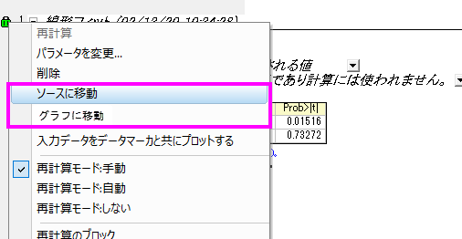

FAQ-1036 元のワークシートやグラフに戻るにはどうすればよいですか？
Go-to-source
最終更新日：2020/01/09
データ操作後、既に結果シートに結果があり、現在の結果の元のデータを確認したいときは、次の方法が利用できます。
- ワークシートから操作を開始した場合は、緑色の鍵マークをクリックしてソースに移動を選択します。これにより元のシートに戻ります。
- グラフから操作を開始した場合は、緑色の鍵マークをクリックしてグラフに移動を選択します。これにより元のグラフに戻ります。

キーワード：ソースに移動, 元のワークシート, 元のデータ, 結果シート